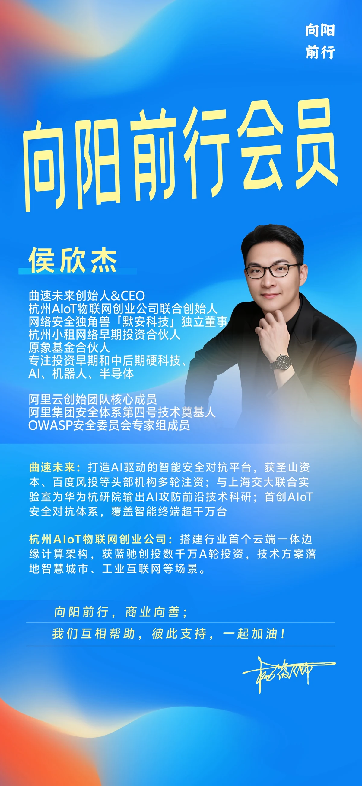
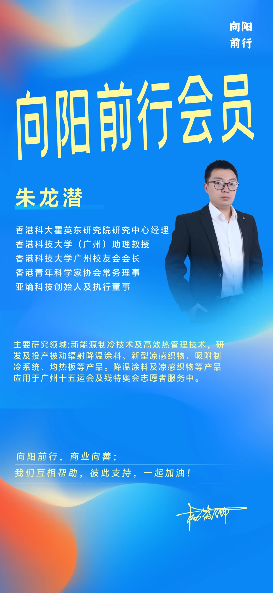
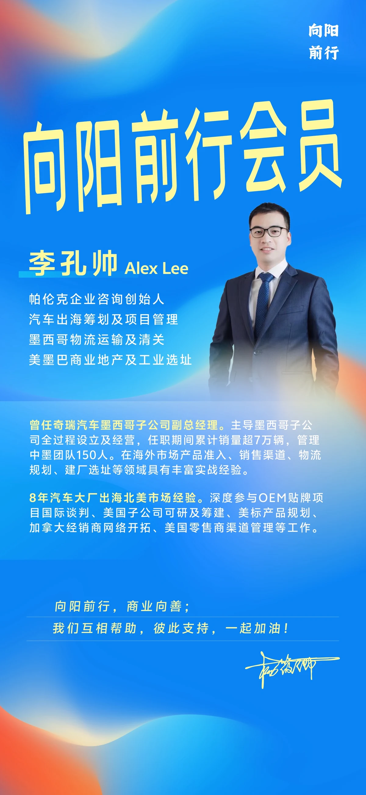
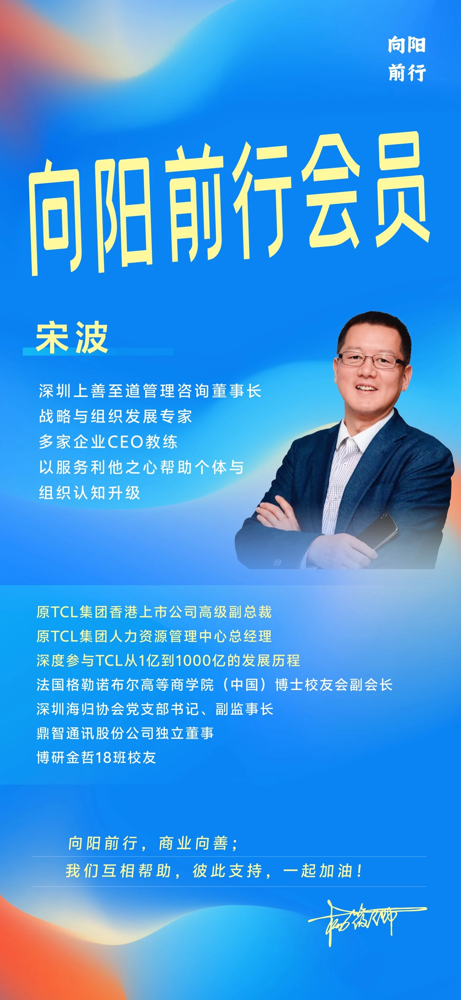
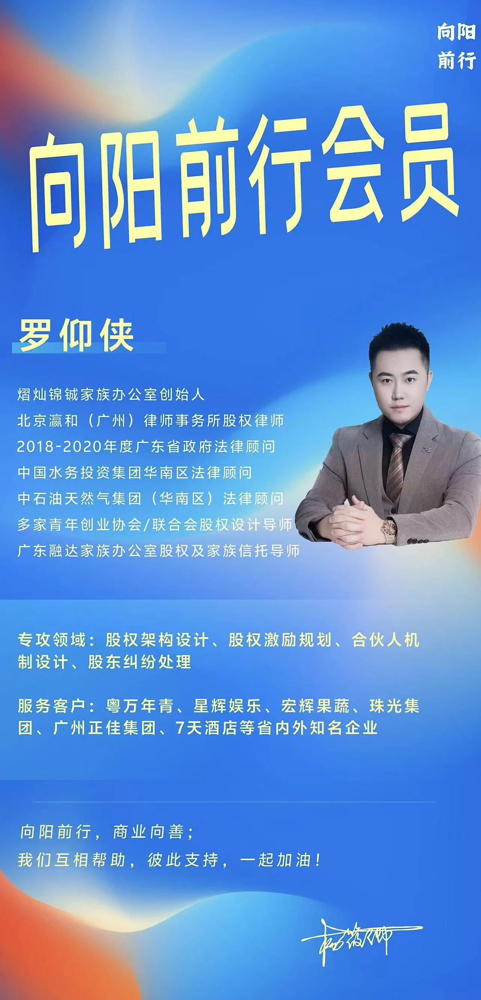
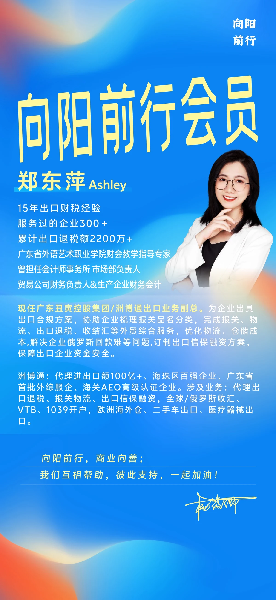
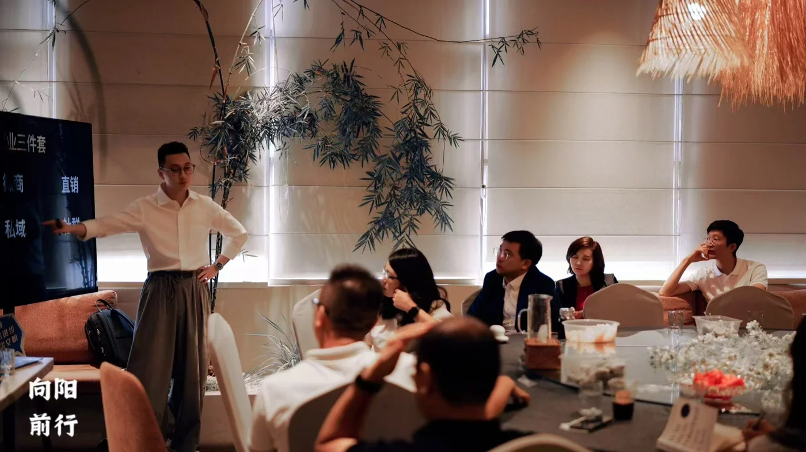
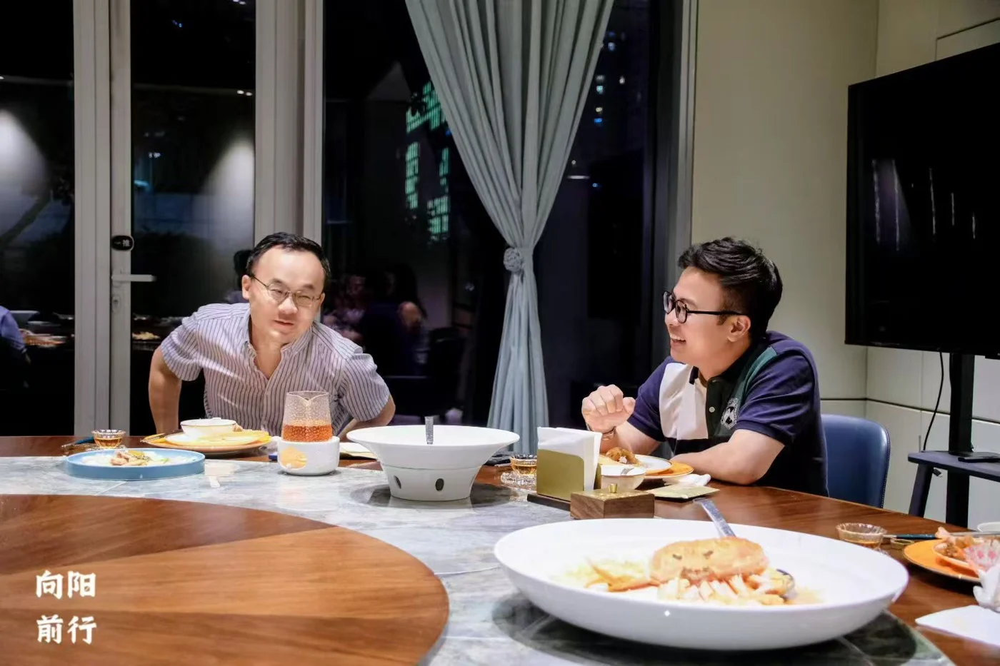
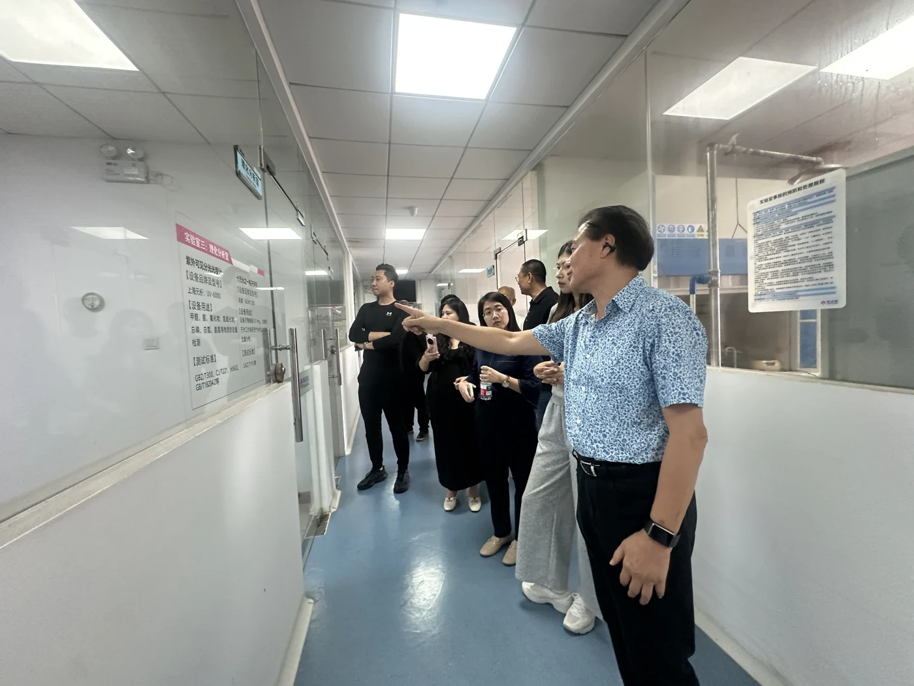

正在探索方向
多了解一个行业，
多一份选择的依据。
听正在一线经营的人讲经验，了解不同生意怎样运转。在行动之前，积累更具体的认识。
了解 SunFlower 会员线下相聚 广州 · 深圳 · 珠三角
线上交流 全国都能参与
带着好奇来，也带着正在面对的问题来。
正在探索方向
听正在一线经营的人讲经验，了解不同生意怎样运转。在行动之前，积累更具体的认识。
了解 SunFlower 会员正在经营业务
交流经营中的判断与难题，分享自己的实践。在持续相处中认识彼此，寻找适合的合作机会。
了解 Star 会员来自不同领域，带着各自的实践经验，在这里继续学习。
科技创业

曲速未来创始人兼 CEO
曾参与阿里云创始团队，创业实践涉及 AI 安全与物联网。
科研与产业

亚熵科技创始人及执行董事
把热管理研究带到产品中，研发降温涂料、凉感织物。
企业出海

帕伦克企业咨询创始人
曾任奇瑞汽车墨西哥子公司副总经理，参与当地公司设立与经营。
战略与组织

深圳上善至道管理咨询董事长
曾任 TCL 集团人力资源管理中心总经理，关注战略与组织发展。
股权与合伙

北京瀛和（广州）律师事务所股权律师
专注股权架构、股权激励与合伙人机制。
出口业务

洲博通出口业务副总
围绕报关、物流、退税与收结汇，梳理企业出口合规方案。
部分会员介绍 · 经历摘自会员资料
每一次见面，都有具体的话题
从一场实战分享，到一顿深入交流的饭，再到走进企业现场。

围绕私域运营、企业出海、合伙机制等主题，听实践者讲述具体经验。
图为第01期线下沙龙 · 私域运营分享

从正在做的业务聊起，在小范围交流中认识彼此。
图为第02期深度饭局 · 跨境专场

了解产品背后的技术，也看看企业怎样把想法落地。
图为第33期技术参访 · 空气净化技术
学习与探索，经营与合作。两种会员，都从真实交流开始。
给正在学习、探索方向的你
了解一手信息，为下一步积累判断。
线下活动餐费 AA，具体安排随活动通知。
咨询 SunFlower 会员给已有业务的创业者、负责人
带着业务与项目，寻找合作的可能。
包含 SunFlower 全部会员权益
以珠三角为主，线下餐费 AA。合作取决于需求、项目条件及双方意愿。
咨询 Star 会员还不确定哪一档适合自己？和我们聊聊你目前的阶段。
关于向阳前行
向阳前行创立于 2025 年 8 月，是一个线上线下结合的学习社交型组织。我们为心态开放的创业者与准备创业的人，提供深度学习和商业交流的场景。
创始人杨筱卿曾是资深商业、科技记者，也是连续创业者，曾负责海归、企二代及创业者社群的全球运营。
与同频的人一起学习，也让创业路上多一些可以交流的伙伴。
可以。向阳前行也面向准备创业、希望了解不同行业和探索方向的人。SunFlower 会员侧重一手信息、实战经验与持续学习，你可以先介绍自己的阶段，再了解哪种会员更适合自己。
可以。线上沙龙面向全国，会员也可以在专属微信群交流、通过知识星球查阅每期沙龙的深度总结。线下活动以广州、深圳及珠三角为主。
SunFlower 为 999 元／年，侧重持续学习、行业信息与成员交流。Star 为 9800 元／年，包含 SunFlower 全部权益，并增加项目路演、活动共创、合适项目的共创及资源对接，主要推荐给已有业务的创业者或负责人。
线下活动餐费采用 AA 制。参加具体活动前，可以向我们了解该场活动的安排和费用。
围绕客户、渠道、资金等实际需求进行交流与对接。是否形成合作，取决于需求匹配、项目条件和双方意愿，不承诺成交或融资结果。
添加创始人杨筱卿或合伙人许国夫的微信，备注「向阳前行」。可以先说说自己的业务阶段、关注方向或想了解的会员，我们会接待并介绍入会事宜。
从一次对话开始
聊聊你正在做的事，或者想探索的方向。
我们会为你介绍会员和活动安排。
创始人
点击放大，长按二维码可保存或识别
合伙人
点击放大，长按二维码可保存或识别
添加其中一位即可。你可以先咨询了解，再决定是否加入。